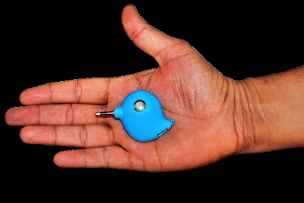
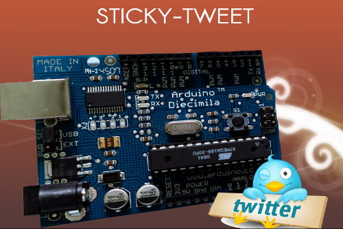
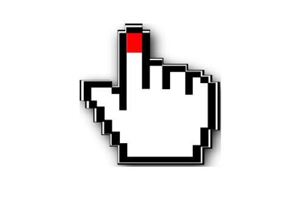

Work
About
Resume
Weirdography
Blog
Contact
IMU Galaxian
8-bit Galaxian game in processing based controlled by self-made remote using IMU sensors.
Le Chal
Smart Shoes helping Visually Impaired to Navigate from one place to another.

Diabeto
Bluetooth powered device, enables the transfer of glucose readings from your Glucometer into your android device.
Sphero
A virtual Auro around user which keeps essential things with him without letting him forget it.

Sticky-Tweet
An Embedded device replacing sticky notes, used to show latest tweets with a particular hashtag, when gets activated.

gesto-Paint
A project based on painting using hand gestures.